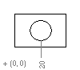

|
AddDimOrdinate Method |
Creates an ordinate dimension given the definition point and the leader endpoint.
Signature
RetVal = object.AddDimOrdinate(DefinitionPoint, LeaderEndPoint, UseXAxis)
Object
ModelSpace Collection, PaperSpace Collection, Block
The objects this method applies to.
DefinitionPoint
Variant (three-element array of doubles); input-only
The 3D WCS coordinates specifying the point to be dimensioned.
LeaderEndPoint
Variant (three-element array of doubles); input-only
The 3D WCS coordinates specifying the endpoint of the leader. This will be the location at which the dimension text is displayed.
UseXAxis
Integer; input-only
TRUE: Creates an ordinate dimension displaying the X axis value.
FALSE: Creates an ordinate dimension displaying the Y axis value.
RetVal
DimOrdinate object
The newly created ordinate dimension object.
Remarks
Ordinate dimensions display the X or Y coordinate of an object along with a simple leader line. The absolute value of the coordinate is used according to the prevailing standards for ordinate dimensions.

An ordinate dimension measuring the absolute
X
position of a point tangent to a circle
| Comments? |